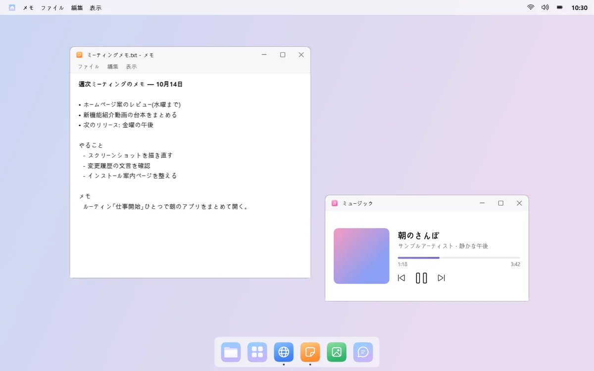
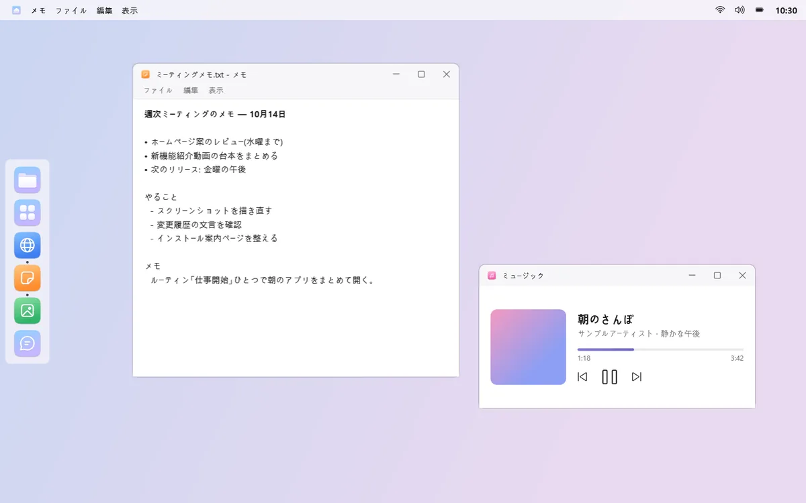
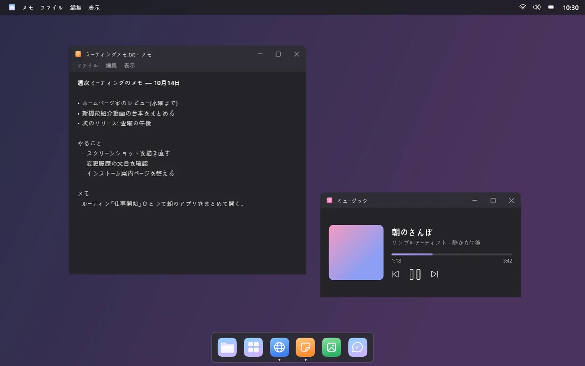
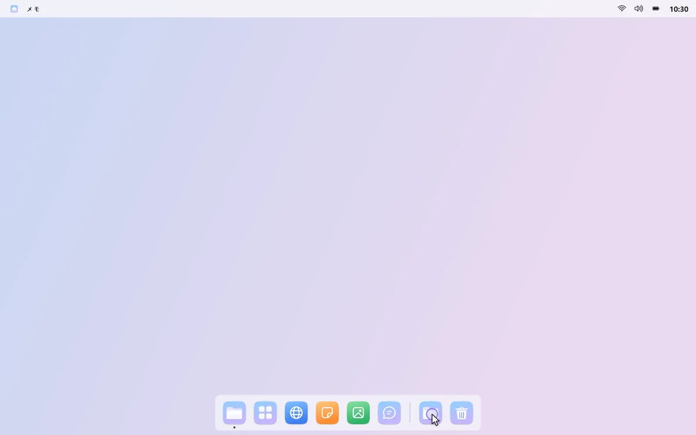
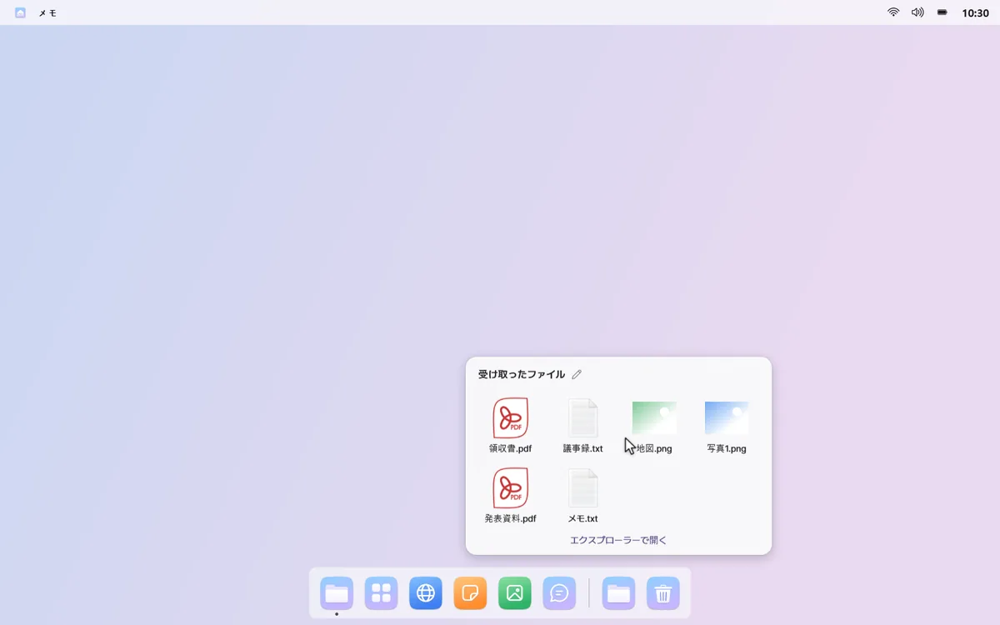
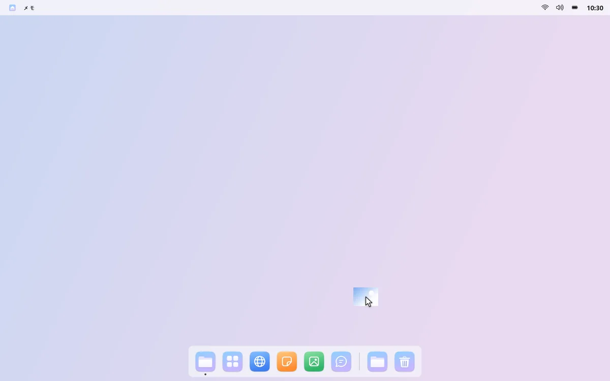
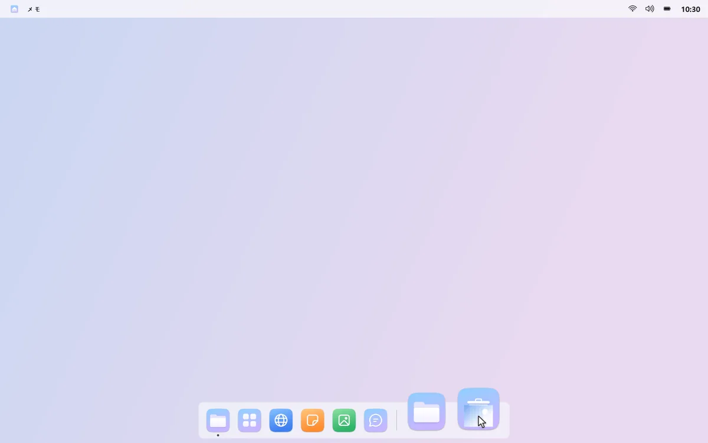
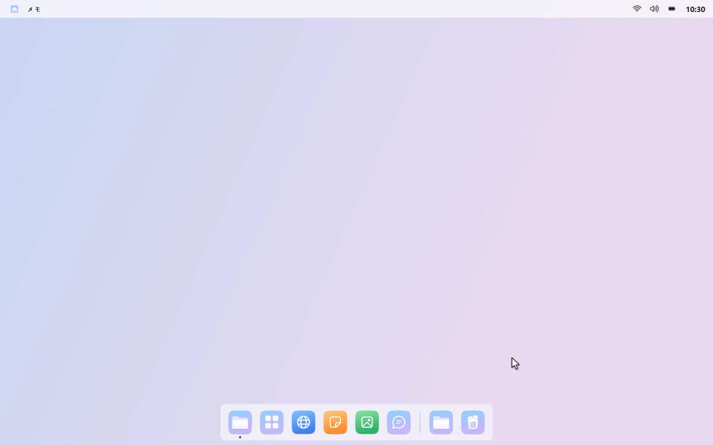

ドック・フォルダー・ごみ箱
下をもっとすっきり
タスクバーの代わりに、よく使うアプリとフォルダー、ごみ箱だけを置いたドックを。ふだんは隠れていて、画面の端にポインターを近づけると現れます。
01
好きな場所、好きな見た目
ドックは下・左・右・上のどこにでも置けます。ドラッグで並べ替え、ライト・ダークのテーマと拡大効果を選べます。



02
ダウンロード フォルダーをドックに
フォルダーをドックに置いてクリックすると、中の最新ファイルがグリッドで表示されます。新しいファイルが届くと、小さな点でお知らせします。



03
ごみ箱もドックに
ファイルをドックのごみ箱にドラッグすれば、ごみ箱へ移動します。クリックすると最近捨てたファイルが見え、右クリックで元に戻せます。


04
ウィンドウはプレビューで選ぶ
ウィンドウがいくつもあるアプリをクリックすると、プレビューで目的のウィンドウを選べます。別のデスクトップにあれば、そのデスクトップへ移動します。今のデスクトップのアプリだけをドックに表示することもできます。